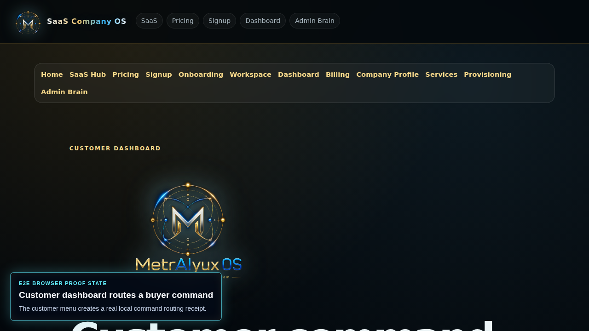
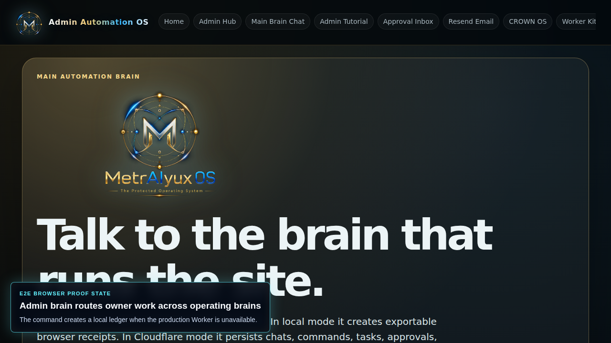
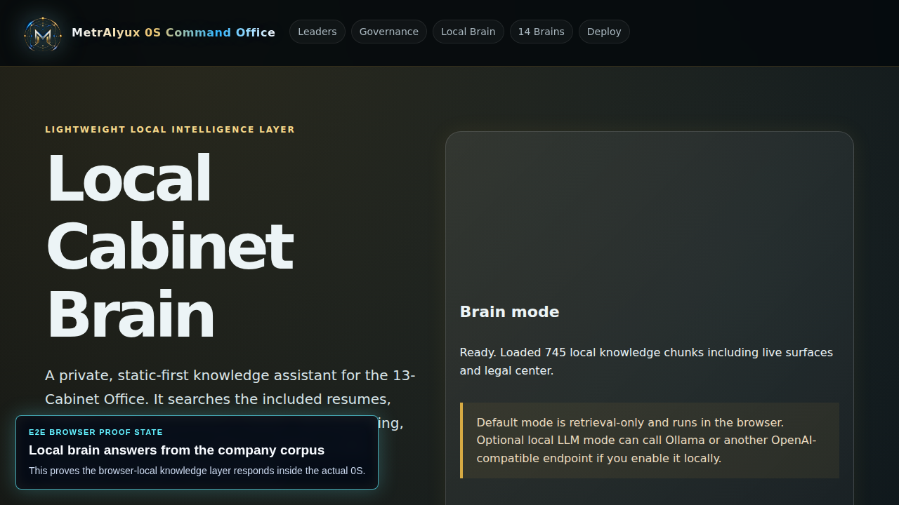
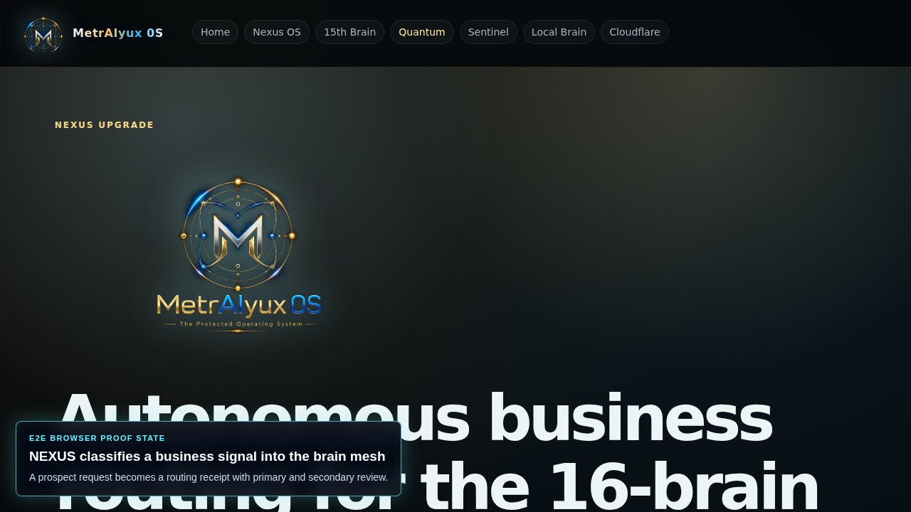
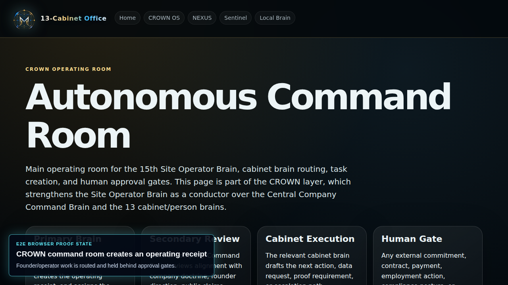
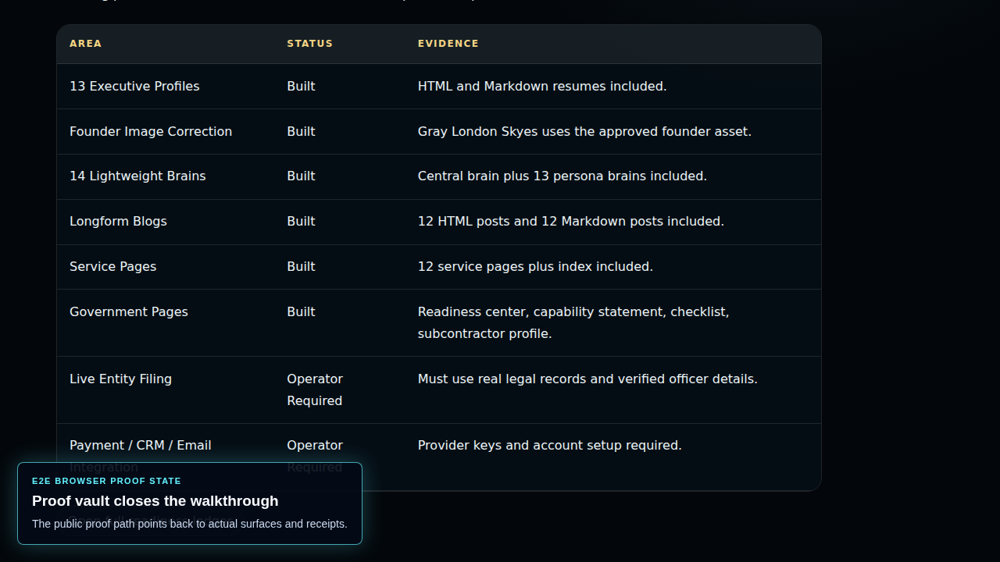

Customer entry
Signup, onboarding, company profile, services, and workspace setup create local receipts.
🎥 Real 0S browser proof
This walkthrough shows the actual MetrAIyux 0S screens: customer signup, onboarding, service selection, workspace setup, billing intent, customer command routing, admin brain response, local brain retrieval, NEXUS routing, CROWN command, and the proof vault. No private `.env` values or owner secrets are shown.
🧾 What the recording proves
We show the sellable flow end to end: a customer can enter the system, pick services, generate a workspace record, create a billing intent, send work through the customer dashboard, and see that work route into brain-led operating surfaces.
Signup, onboarding, company profile, services, and workspace setup create local receipts.
Billing intent captures plan and payment preference without charging in static proof mode.
The customer dashboard routes a command into the operating brain path with approval required.
The admin brain responds, records a ledger, and keeps protected actions behind approval gates.
The local brain answers from the included company corpus, while NEXUS classifies a business signal.
CROWN and the proof center frame public claims as evidence work, not unsupported marketing.
📸 Proof states
The long video is the main proof. These frames are the high-signal checkpoints from the same browser-driven capture path.

Customer command
Admin brain
Local brain
NEXUS
CROWN
Proof vault🔐 Honest boundary
Static mode creates browser-local receipts. Production mode still depends on configured Cloudflare Workers, D1/KV/Queues, provider credentials, Stripe or invoicing, Resend, and SkyeGateFS27 auth. That boundary is good: buyers see the workflow, while private keys and owner-only controls stay off the public page.